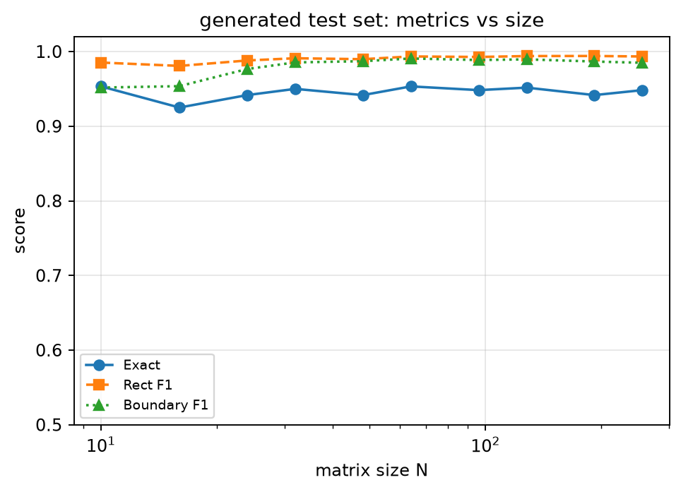
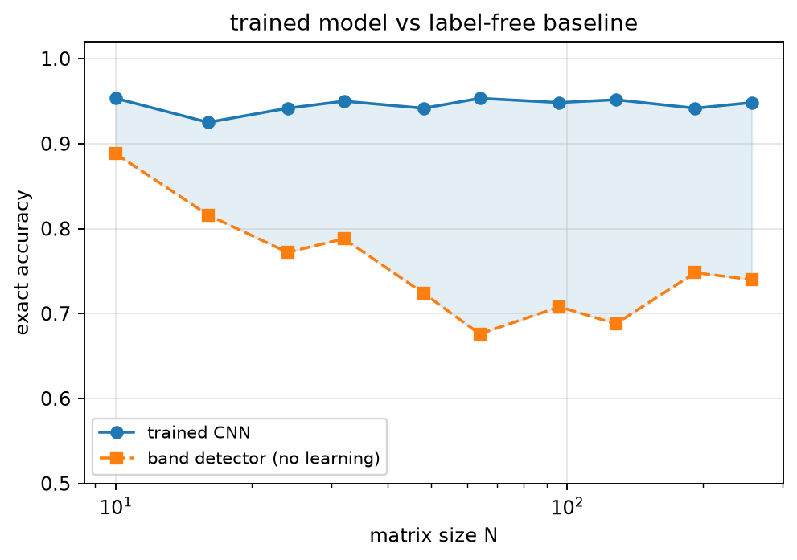
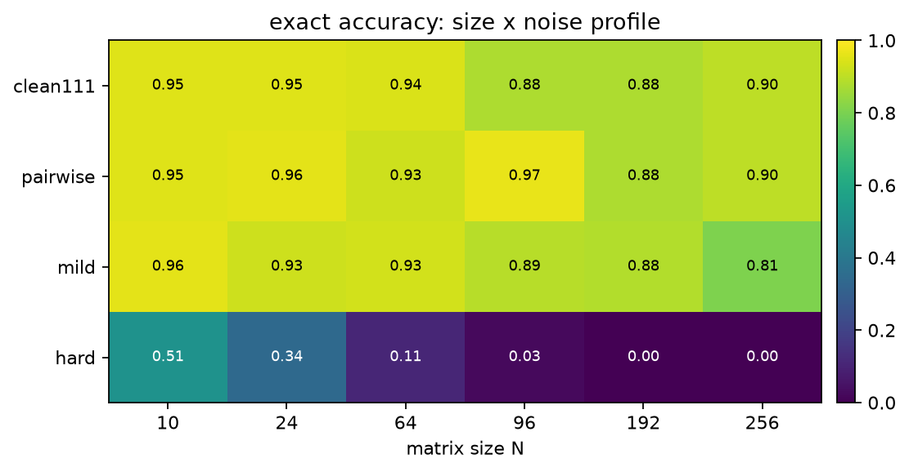
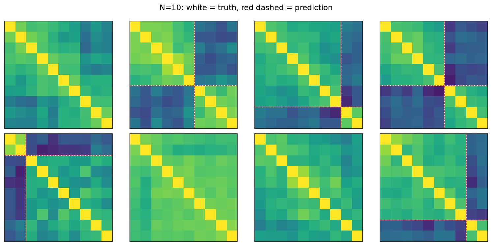
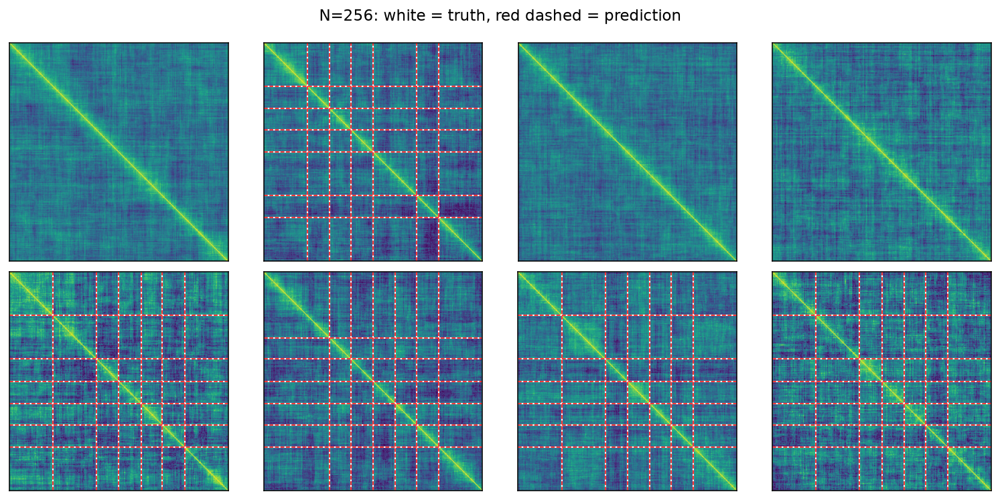
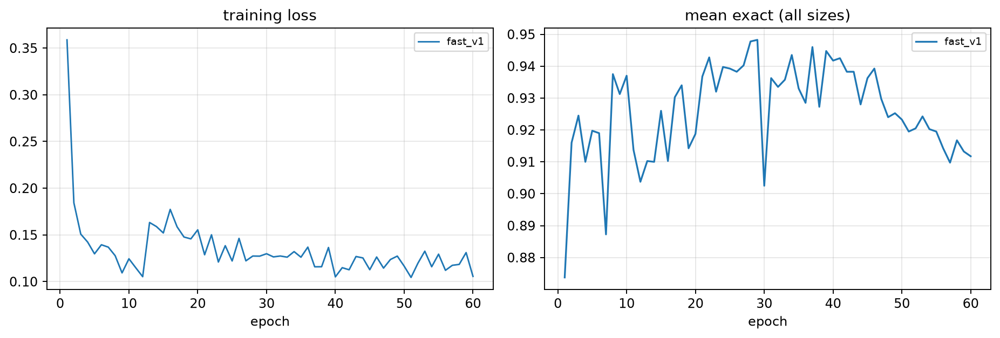
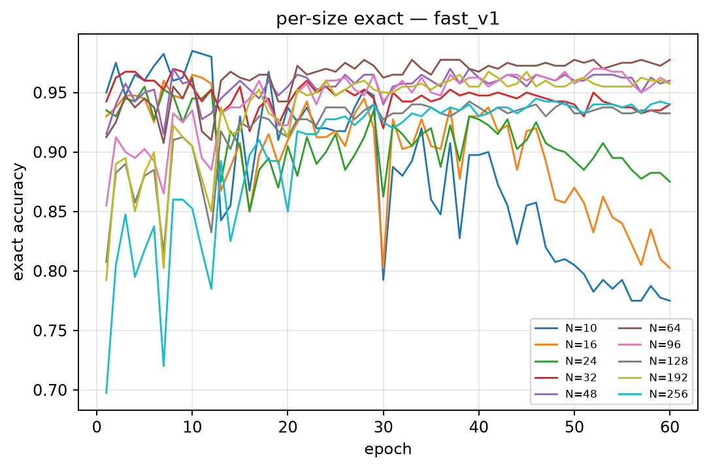

Track 03 · Synthetic to Scale
生成式数据集
与全尺寸边界模型
相干矩阵不落盘，按 (seed, epoch, index, size) 在线批量正演生成；
一个 1.20 M 参数的全卷积检测器在 N = 10 … 256 的整个区间工作，
并与无学习基线在同一批测试矩阵上对照。
fast_v160 epoch52.3 minAscend 910 · npu:0mean Exact 0.946
Matrix sizes10 – 256
Mean exact0.946
Spread0.925 – 0.953
Train time52.3min
逐尺寸结果
测试集每尺寸 600 个新矩阵 · 阈值在独立验证集（400）上按尺寸校准
| N | 10 | 16 | 24 | 32 | 48 | 64 | 96 | 128 | 192 | 256 |
|---|---|---|---|---|---|---|---|---|---|---|
| Exact | 0.953 | 0.925 | 0.942 | 0.950 | 0.942 | 0.953 | 0.948 | 0.952 | 0.942 | 0.948 |
| Rect F1 | 0.985 | 0.981 | 0.988 | 0.991 | 0.990 | 0.993 | 0.993 | 0.994 | 0.994 | 0.993 |
| Boundary F1 | 0.952 | 0.954 | 0.977 | 0.985 | 0.987 | 0.991 | 0.989 | 0.990 | 0.987 | 0.985 |
| 计数 MAE | 0.05 | 0.08 | 0.06 | 0.05 | 0.06 | 0.04 | 0.06 | 0.05 | 0.07 | 0.06 |
| 校准阈值 | 0.30 | 0.35 | 0.30 | 0.30 | 0.60 | 0.45 | 0.55 | 0.60 | 0.60 | 0.55 |
均值 0.9455、极差仅 0.028：10 到 256 之间没有尺寸断崖。

与无学习基线对照
同一条近对角带统计量 + 阈值，不含任何训练

鲁棒性
同一权重 · 四种噪声配方 · 六档尺寸
| 配方 | 10 | 24 | 64 | 96 | 192 | 256 |
|---|---|---|---|---|---|---|
| clean111 | 0.95 | 0.95 | 0.94 | 0.88 | 0.88 | 0.90 |
| pairwise | 0.95 | 0.96 | 0.93 | 0.97 | 0.88 | 0.90 |
| mild | 0.96 | 0.93 | 0.93 | 0.89 | 0.88 | 0.81 |
| hard 域外 | 0.51 | 0.34 | 0.11 | 0.03 | 0.00 | 0.00 |
真实域（clean / pairwise / mild）稳定在 0.81–0.97。 hard 用的 0.5 px 配准是真实 TOPS 精度（0.001–0.01 px）的 50 倍，崩掉属预期，不作部署指标。
视数敏感性 · 固定 L，其余同训练分布
| N | L = 9 | L = 16 | L = 24 | L = 48 |
|---|---|---|---|---|
| 10 | 0.830 | 0.940 | 1.000 | 0.990 |
| 64 | 0.680 | 0.930 | 1.000 | 0.970 |
| 256 | 0.260 | 0.920 | 0.990 | 1.000 |
L = 9 是真难点，且随 N 放大而恶化——候选变多，Exact 要求全对。

样例
白线 = 真值边界 · 红虚线 = 预测


训练过程
60 epoch · 每 epoch 按尺寸分配步数，使各尺寸墙钟时间相近


调试记录
本轮真正改变结果的四条
- 阈值校准是决定性的。同一权重，N = 10 在 0.5 阈值下 0.782，校准到 0.30 后 0.955——此前"小尺寸弱"是假象。
- 小矩阵生成必须
OMP_NUM_THREADS=1，否则 640 线程互抢，生成速度掉一个量级。 - DataLoader 多 worker 在 NPU 上下文 fork 后会挂死；改为单进程在线批量生成即稳定。
- 批量 Cholesky + complex64 把 N=128 的生成从 40.7 ms/样本降到 14.5 ms/样本。
复现
A3 · Ascend 910 · 单卡
export OMP_NUM_THREADS=1 MKL_NUM_THREADS=1
source /usr/local/Ascend/ascend-toolkit/set_env.sh
cd /root/insar_affair/blockcoh
python src/train_fast.py --epochs 60 --device npu --out runs/fast_v1
python src/eval_fast.py --ckpt runs/fast_v1/best.pt --out figs/final
python src/robust_eval.py --ckpt runs/fast_v1/best.pt --eval-json figs/final/eval.json权重与代码在仓库 workspace/block_coherence/；完整说明见
文档页。